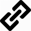

4.1 GEN – General Device Requirements 
4.1.1 GEN.DESIGN – Design
4.1.2 GEN.OPS – Device Operation
| ID | Requirement |
|---|---|
| GEN.OPS.1 | All RG firmware and associated system files MUST be pre-installed. |
| GEN.OPS.2 | The RG MUST operate 24 hours a day, 7 days a week without the need to reboot. |
| GEN.OPS.3 | The MTBF (Mean Time Between Failures) of the RG and operating system SHOULD be equal to or exceed 1 year (e.g. it should not need a reboot more than one time per year). |
| GEN.OPS.4 | The life expectancy of the RG SHOULD be at least seven years. |
| GEN.OPS.5 | The RG SHOULD tolerate power fluctuations and brown-outs, continuing to operate normally and maintaining its configuration after these events. |
| GEN.OPS.6 | The RG SHOULD be able to detect faults and reset appropriately upon detection. |
| GEN.OPS.7 | The RG SHOULD include sufficient non-volatile memory to accommodate future control and data plane protocol upgrades over a minimum of four years. The potential upgrades may include: initiating and terminating signaling protocols at IP and ATM layers; logic for packet classification, policing, forwarding, traffic shaping and QoS support at IP, Ethernet and ATM layers. |
| GEN.OPS.8 | The RG MUST preserve local configuration information during power-off and power interruption. |
| GEN.OPS.9 | The RG MUST complete power up in 60 seconds or less. |
| GEN.OPS.10 | The RG SHOULD be self-installable by an end user in under 20 minutes assuming the default configuration and mode of operation. This is the time from when the box is opened to when the user is using the service including any driver installation (assuming no network complications and excluding micro-filter installation and customer ordering/registration). |
| GEN.OPS.11 | Other than networking drivers (e.g. USB, wireless, etc…), other software or drivers MUST NOT be required on computers and other devices for proper and full use of the RG. |
| GEN.OPS.12 | The RG, its drivers and any packaged software SHOULD support Macintosh OS 8.6 and above. |
| GEN.OPS.13 | The RG, its drivers and any packaged software SHOULD support all Microsoft PC based operating systems that have not yet reached “End of Support” status (see http://support.microsoft.com/lifecycle for more details). |
| GEN.OPS.14 | The RG, its drivers and any packaged software MAY support Linux. It is especially desirable to do so with an open interface. |
| GEN.OPS.15 | The RG MUST preserve its configuration across firmware updates. |
| GEN.OPS.16 | All software revisions SHOULD be backward compatible with all previous versions. There SHOULD be no loss of existing functionality. |
| GEN.OPS.17 | Software revisions MUST NOT require service provider network changes to maintain proper operation of previous features. |
| GEN.OPS.18 | The RG firmware MUST be identified by a revision number. This revision number MUST be formatted using an X.Y.Z incremental numbering format where X indicates the major release number, Y indicates the minor release number, and Z represents the revision number (e.g. 2.4.1). |
| GEN.OPS.19 | The RG vendor SHOULD have a web site where firmware updates and documentation are available. |
| GEN.OPS.20 | The firmware at the RG vendor’s web site SHOULD include all error correcting updates for the RG. |
The RG MUST NOT allow “back door” entry to the unit (e.g. there must be no hidden telnet or web access using secret passwords). This requirement is not intended to preclude physically secured craft access in accordance with GEN.DESIGN.14. |
|
| GEN.OPS.22 | All firmware updates MUST be verified using security mechanisms. A checksum mechanism is a minimum requirement for achieving this. |
| GEN.OPS.23 | All firmware updates SHOULD be signed with a cryptographic “fingerprint” of at least 256 bits. |
In the event of a failure occurring during an update, the RG MUST be able to back off to the prior version of the firmware installed on the RG. That is, the prior version of the RG’s firmware MUST continue to be useable in the event that a firmware update fails to complete. This is not a requirement for a dual image, although that is one manner in which this requirement might be satisfied. |
4.1.3 GEN.NET – Networking Protocols
| ID | Requirement |
|---|---|
| GEN.NET.1 | The RG MUST support Ethernet (IEEE 802.3). |
| GEN.NET.2 | The RG MUST support IP Version 4. |
| GEN.NET.3 | If the RG does not support IPV6, it SHOULD be software configurable or upgradeable to support IP Version 6 in the future. This means that the processing power, memory and networking components be designed appropriately and be sufficiently robust to provide this support. |
The RG MUST support the TCP, IP, UDP, routing and associated IETF protocols identified here:
IANA Directory of General Assigned Numbers (http://www.iana.org/numbers.html) |
|
| GEN.NET.5 | The RG MUST support IP over Ethernet. |
| GEN.NET.6 | The RG MUST support, at a minimum, a 256 MAC address table for LAN devices. |
4.1.4 GEN.NETv6 – IPv6 Networking Protocols
| ID | Requirement |
|---|---|
| GEN.NETv6.1 | The RG MUST support IP Version 6, which is defined in RFC 2460 [66]. |
| GEN.NETv6.2 | The RG MUST support enabling and disabling of IPv6. |